1064A24 TURBOCHARGER - EXHAUST MANIFOLD - HOSE CONNECTED TO EXHAUST PIPE - R.R.
- Path
- Procedures > 10 ENGINE > 1064 ENGINE SUPERCHARGING SYSTEM > 1064A TURBOCHARGER ASSEMBLY > 1064A24 TURBOCHARGER - EXHAUST MANIFOLD - HOSE CONNECTED TO EXHAUST PIPE - R.R.
- Kind
- repair procedure (removal / refitting; the operation number is the code)
- Applies to
- engines: 2.4 JTD 20V; all production periods
- Interactive page
- https://sloeber94.github.io/elrnDB-lThss/en/#/850615
Applies to: engines: 2.4 JTD 20V; all production periods
 Removing
Removing
 Refitting
Refitting- Position the vehicle on a lift.
See in Op. 7055B54 PROTECTION/GUARD under engine - R.R.
See in Op. 7040D50 ENGINE COMPARTMENT UPPER SOUND INSULATION SHIELD - R.R.
See in Op. 1016A10 SOUND-PROOFING COVER - R.R.
See in Op. 1048B44 RIGID air supply PIPE from heat exchanger to intake manifold - R.R.
See in Op. 1048A56 UPPER RESONATOR - R.R.
See in Op. 1048A50 air inlet pipe to turbocharger - r + r
See in Op. 1048A21 AIR INLET HOSE FROM INTAKE TO FILTER - R.R.
See in Op. 1048A10 COMPLETE AIR FILTER -R.R.
1. Undo the fixing nuts (1a) and remove the bonnet lock (1b) from the housing in the crossmember.
2. Undo the lower nut (2a) and remove the lock reinforcement bracket (2b).
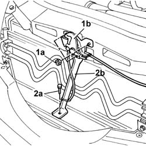
Applies to: engines: 2.4 JTD 20V; all production periods
1. Undo the retaining bolts.
2. Remove the upper front crossmember.
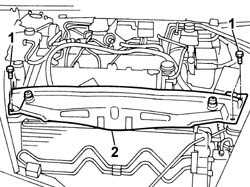
Applies to: engines: 2.4 JTD 20V; all production periods
- Position a suitable container for collecting the engine coolant at the outlet of the upper pipe and the radiator.
1. Disconnect the upper radiator pipe.
- Remove the container for collecting the engine coolant and seal the housing in the radiator.
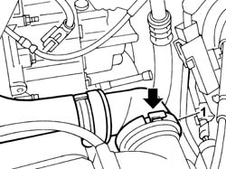
Applies to: engines: 2.4 JTD 20V; all production periods
1. Undo the nut and disconnect the earth lead from the bodyshell.
 | Description | Connector |
|---|---|---|
1 | Right front earth | C011 |
2. Disconnect the electrical connections for the engine cables/fan-radiator cables coupling.
| Description | Connector |
|---|---|---|
2 | Front/radiator coupling | D009A |
| Description | Connector |
|---|---|---|
2 | Front/radiator coupling | D009B |
| Description | Connector |
|---|---|---|
2 | Front/radiator coupling | D009C |
3. Undo the upper and lower bolts fixing the fan to the radiator assembly.
4. Remove the fan assembly from the upper part of the engine compartment.
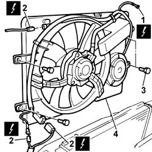
Applies to: engines: 2.4 JTD 20V; all production periods
1. Undo the bolt fixing the rigid section of the inlet pipe to the air/air heat exchanger.
2. Disconnect the band (2a) and remove the rigid section of the air inlet pipe (2b) from the heat exchanger.
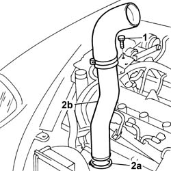
Applies to: engines: 2.4 JTD 20V; all production periods
1. Undo the nut and the bolt (1a) and remove the mounting bracket (1b) for the engine oil heat exchanger pipes.
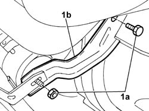
Applies to: engines: 2.4 JTD 20V; all production periods
1. Undo the retaining nuts.
2. Remove the heat shield for the exhaust manifold.
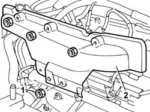
Applies to: engines: 2.4 JTD 20V; all production periods
- Raise the vehicle.
1. Undo the nuts (1a) fixing the mounting bracket (1b) for the front section of the exhaust pipe.
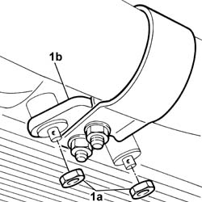
Applies to: engines: 2.4 JTD 20V; all production periods
1. Undo the bolts fixing the front section of the exhaust pipe to the catalytic preconverter.
- Lower the front section of the exhaust pipe and move it aside.
- Keep the gasket for the front section of the exhaust pipe.
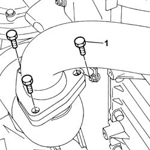
Applies to: engines: 2.4 JTD 20V; all production periods
1. Loosen the nut fixing the collar joining the preconverter to the turbocharger.
2. Remove the catalytic preconverter.
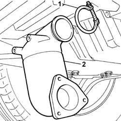
Applies to: engines: 2.4 JTD 20V; all production periods
1. Undo the fixing nuts (1a) and remove the shield (1b).
2. Disconnect the flexible sump oil return pipe from the turbochager.
3. Undo the bolt (3a) and disconnect the turbocharger oil supply pipe (3b) from the cylinder block/crankcase.
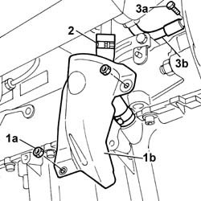
Applies to: engines: 2.4 JTD 20V; all production periods
1. Undo the bolts fixing the E.G.R. system water/exhaust gas heat exchanger exhaust gas inlet pipe from the exhaust manifold.
2. Loosen the band (2a) and remove the E.G.R. system water/exhaust gas heat exchanger inlet pipe (2b).
- Keep the seals from the ends of the pipe.
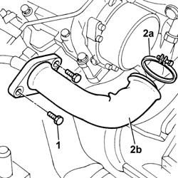
Applies to: engines: 2.4 JTD 20V; all production periods
1. Disconnect the air pipe from the turbocharger.
2. Disconnect the vacuum pipe from the turbocharger.
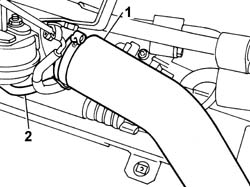
Applies to: engines: 2.4 JTD 20V; all production periods
1. Disconnect the flexible section of the vacuum pipe from the rigid section.
2. Release the flexible section from the mounting bands.
3. Undo the retaining bolts.
4. Release the rigid section of the vacuum pipe from the vacuum reservoir and move it away from the work area.
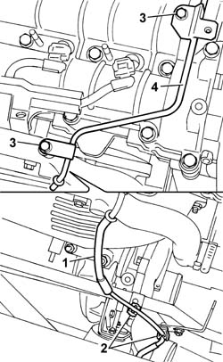
Applies to: engines: 2.4 JTD 20V; all production periods
1. Disconnect the engine coolant pipes connected to the pump rigid water inlet pipe.
2. Undo the bolts securing the water inlet pipe to the pump.
3. Remove the pump rigid water inlet pipe (3a) and keep the gasket (3b) from underneath.
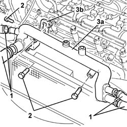
Applies to: engines: 2.4 JTD 20V; all production periods
- Position a suitable container for collecting the engine coolant that comes out.
1. Undo the nuts fixing the oil pipes to the pump.
2. Undo the bolts fixing the join with the flexible oil return section from the heat exchanger.
3. Remove the two rigid engine oil pipes.
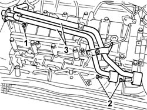
Applies to: engines: 2.4 JTD 20V; all production periods
1. Undo the nuts securing the exhaust manifold to the cylinder head.
2. Undo the bolts fixing the reinforcement bracket to the cylinder head.
3. Remove the exhaust manifold / turbocharger assembly from the top.
- Keep the exhaust manifold gasket from underneath.
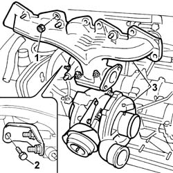
Applies to: engines: 2.4 JTD 20V; all production periods
Refitting
Removing- Fit the new exhaust manifold gasket in the special housing on the cylinder head.
- Fit the turbocharger-exhaust manifold assembly.
1. Tighten the self-locking nuts fixing the exhaust manifold to the cylinder head to torque.
 | Value - daNm | Fastening | Component | Ø |
|---|---|---|---|---|
1 | 2.5 | Nuts | EXHAUST MANIFOLD/S | M8 |
2. Tighten the reinforcement bracket fixing bolt to torque.
| Value - daNm | Fastening | Component | Ø |
|---|---|---|---|---|
2 | 2.5 | Bolts | EXHAUST MANIFOLD RETAINING BRACKET | M8 |
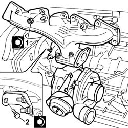
Applies to: engines: 2.4 JTD 20V; all production periods
- Fit the two rigid engine oil pipes.
- Tighten the bolts fixing the join with the flexible oil return section from the heat exchanger to torque.
- Tighten the nuts fixing the oil pipes to the pump to torque.
- Fit the pump water inlet pipe together with a new gasket.
- Screw in the bolts fixing the pipe to the cylinder head and then tighten them to torque.
- Connect the engine coolant pipes using new bands.
- Place the rigid vacuum reservoir vacuum pipe in position and tighten the fixing bolts.
- Connect the flexible pipe to the rigid section of the pipe and secure the flexible section to the mounting bands.
- Connect the vacuum pipe from the variable geometry solenoid valve to the turbocharger and the air pipe to the air/air heat exchanger.
- Fit the E.G.R. system water/exhaust gas heat exchanger exhaust gas inlet pipe (1a) in place and tighten the securing band (1b).
- Tighten the bolts fixing the E.G.R. system water/exhaust gas heat exchanger exhaust gas inlet pipe to the exhaust manifold to the recommended torque.
- Tighten the connector fixing the oil delivery pipe to the turbocharger to the engine block.
- Connect the flexible sump oil return pipe to the turbochager.
- Fit the metal protection and tighten the two fixing nuts.
- Fit the catalytic preconverter in the housing on the turbocharger.
1. Tighten the nut fixing the collar joining the preconverter to the turbocharger to torque.
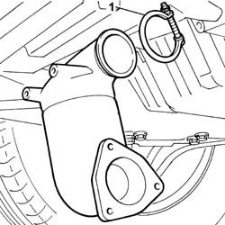
Applies to: engines: 2.4 JTD 20V; all production periods
1. Join the flange for the front section of the exhaust pipe to the flange for the catalytic preconverter tightening the fixing bolts.
- It is advisable to fit a new gasket between the two flanges during this operation.
2. Tighten the fixing bolts to torque.
| Value - daNm | Fastening | Component | Ø |
|---|---|---|---|---|
. | (Preconverter) 2.8 | Bolts | EXHAUST PIPE TO ENGINE | M8 |
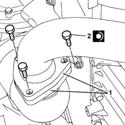
Applies to: engines: 2.4 JTD 20V; all production periods
1. Tighten the nuts fixing the mounting bracket for the first section of the exhaust pipe to the oil sump to torque.
- Fit the heat shield in the housing in the exhaust manifold.
- Tighten the fixing nuts to torque.
- Fit the mounting bracket for the engine oil heat exchanger oil pipes and tighten the nut and the bolt to torque.
- Fit the rigid and flexible pipe assembly for the air inlet pipe to the air heat exchanger.
- Fasten the lower section using the band and the upper section of the pipe using the fixing bolt.
- Fit the fan assembly in the special housing.
- Tighten the upper and lower fixing bolts.
- Connect the electrical connections for the engine cables/fan-radiator cables coupling.
| Description | Connector |
|---|---|---|
. | Front/radiator coupling | D009A |
| Description | Connector |
|---|---|---|
. | Front/radiator coupling | D009B |
| Description | Connector |
|---|---|---|
. | Front/radiator coupling | D009C |
- Connect the earth lead to the bodyshell and secure it using the fixing nut.
| Description | Connector |
|---|---|---|
. | Right front earth | C011 |
- Connect the uppper engine coolant pipe to the radiator.
- Fit the upper front crossmember and tighten the fixing bolts to torque.
| Value - daNm | Fastening | Component | Ø |
|---|---|---|---|---|
. | 0.6 | Bolts | FRONT WING CROSSMEMBER HEADLAMP HOUSINGS | M6 |
- Fit the bonnet lid lock complete with bracket and tighten the nuts fixing it to the upper crossmember and to the lower crossmember.
See in Op. 1048A10 COMPLETE AIR FILTER -R.R.
See in Op. 1048A21 AIR INLET HOSE FROM INTAKE TO FILTER - R.R.
See in Op. 1048A50 air inlet pipe to turbocharger - r + r
See in Op. 1048A56 UPPER RESONATOR - R.R.
See in Op. 1048B44 RIGID air supply PIPE from heat exchanger to intake manifold - R.R.
See in Op. 1016A10 SOUND-PROOFING COVER - R.R.
See in Op. 7040D50 ENGINE COMPARTMENT UPPER SOUND INSULATION SHIELD - R.R.
See in Op. 7055B54 PROTECTION/GUARD under engine - R.R.
- Fill the engine cooling system as described in the operation:
See in Op. 0010T20 Engine REFRIGERANT FLUID - Change
- Top up or, if necessary, change the engine oil, referring to the following operation:
See in Op. 0010T10 ENGINE OIL - Change
- Or:
See in Op. 0010T11 ENGINE OIL - Check level and top up if necessary
- Remove the vehicle from the lift.
Topics linked from this page (11)
- 0010T10 ENGINE OIL - Change
- 0010T11 ENGINE OIL - Check level and top up if necessary
- 0010T20 Engine REFRIGERANT FLUID - Change
- 1016A10 SOUND-PROOFING COVER - R.R.
- 1048A10 COMPLETE AIR FILTER -R.R.
- 1048A21 AIR INLET HOSE FROM INTAKE TO FILTER - R.R.
- 1048A50 air inlet pipe to turbocharger - r + r
- 1048A56 UPPER RESONATOR - R.R.
- 1048B44 RIGID air supply PIPE from heat exchanger to intake manifold - R.R.
- 7040D50 ENGINE COMPARTMENT UPPER SOUND INSULATION SHIELD - R.R.
- 7055B54 PROTECTION/GUARD under engine - R.R.